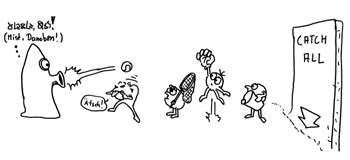
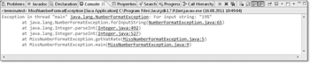
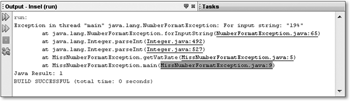
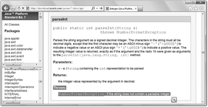
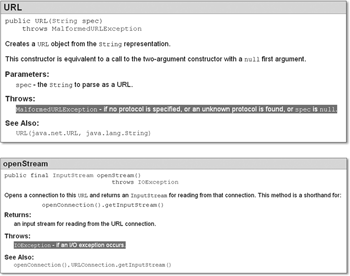
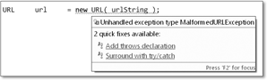
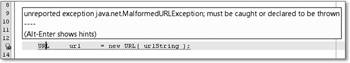
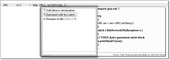

6 Exceptions
»?Wir sind in Sicherheit! Er kann uns nicht erreichen!?
?Sicher??
?Ganz sicher! Bären haben Angst vor Treibsand!?«
– Hägar, Dik Browne (1917–1989)
Fehler beim Programmieren sind unvermeidlich. Schwierigkeiten bereiten nur die unkalkulierbaren Situationen – hier ist der Umgang mit Fehlern ganz besonders heikel. Java bietet die elegante Methode der Exceptions, um mit Fehlern flexibel umzugehen.

6.1 Problembereiche einzäunen
Werden in C Routinen aufgerufen, dann haben diese keine andere Möglichkeit, als über den Rückgabewert einen Fehlschlag anzuzeigen. Der Fehlercode ist häufig –1, aber auch NULL oder 0. Allerdings kann die Null auch Korrektheit anzeigen. Irgendwie ist das willkürlich. Die Abfrage dieser Werte ist unschön und wird von uns gern unterlassen, zumal wir oft davon ausgehen, dass ein Fehler in dieser Situation gar nicht auftreten kann – diese Annahme kann aber eine Dummheit sein. Zudem wird der Programmfluss durch Abfragen der Rückgabeergebnisse unangenehm unterbrochen, zumal der Rückgabewert, wenn er nicht gerade einen Fehler anzeigt, weiterverwendet wird. Der Rückgabewert ist also im weitesten Sinne überladen, da er zwei Zustände anzeigt. Häufig entstehen mit den Fehlerabfragen kaskadierte if-Abfragen, die den Quellcode schwer lesbar machen.
| Beispiel |
|
Die Java-Bibliothek geht bei den Methoden delete(), mkdir(), mkdirs() und renameTo() der Klasse File nicht mit gutem Beispiel voran. Anstatt über eine Ausnahme anzuzeigen, dass die Operation nicht geglückt ist, liefern die genannten Methoden false. Das ist unglücklich, denn viele Entwickler verzichten auf den Test, und so entstehen Fehler, die später schwer zu finden sind. |
6.1.1 Exceptions in Java mit try und catch
Bei der Verwendung von Exceptions wird der Programmfluss nicht durch Abfrage des Rückgabestatus unterbrochen. Ein besonders ausgezeichnetes Programmstück überwacht mögliche Fehler und ruft gegebenenfalls speziellen Programmcode zur Behandlung auf.
Den überwachten Programmbereich (Block) leitet das Schlüsselwort try ein. Dem try-Block folgt in der Regel[147](In manchen Fällen auch ein finally-Block, sodass es dann ein try-finally wird.) ein catch-Block, in dem Programmcode steht, der den Fehler behandelt. Kurz skizziert, sieht das so aus:
try
{
// Programmcode, der eine Ausnahme ausführen kann
}
catch ( ... )
{
// Programmcode zum Behandeln der Ausnahme
}
// Es geht ganz normal weiter, denn die Ausnahme wurde behandelt
Hinter catch folgt also der Programmblock, der beim Auftreten eines Fehlers ausgeführt wird, um den Fehler abzufangen (daher der Ausdruck catch). Es ist nach der Fehlerbehandlung nicht mehr so einfach möglich, an der Stelle fortzufahren, an der der Fehler auftrat. Andere Programmiersprachen erlauben das durchaus.
6.1.2 Eine NumberFormatException auffangen
Über die Methode Integer.parseInt() haben wir an verschiedenen Stellen schon gesprochen. Sie konvertiert eine Zahl, die als Zeichenkette gegeben ist, in eine Dezimalzahl:
int vatRate = Integer.parseInt( "19" );
In dem Beispiel ist eine Konvertierung möglich, und die Methode führt die Umwandlung ohne Fehler aus. Anders sieht das aus, wenn der String keine Zahl repräsentiert:
Listing 6.1: MissNumberFormatException.java
/* 01 */public class MissNumberFormatException
/* 02 */{
/* 03 */ public static int getVatRate()
/* 04 */ {
/* 05 */ return Integer.parseInt( "19 %" );
/* 06 */ }
/* 07 */ public static void main( String[] args )
/* 08 */ {
/* 09 */ System.out.println( getVatRate() );
/* 10 */ }
/* 11 */}
Die Ausführung des Programms bricht mit einem Fehler ab, und die virtuelle Maschine gibt uns automatisch eine Meldung aus:
Exception in thread "main" java.lang.NumberFormatException: For input string: "19 %"
at java.lang.NumberFormatException.forInputString(NumberFormatException.java:48)
at java.lang.Integer.parseInt(Integer.java:456)
at java.lang.Integer.parseInt(Integer.java:497)
at MissNumberFormatException.getVatRate(MissNumberFormatException.java:5)
at MissNumberFormatException.main(MIssNumberFormatException.java:9)
In der ersten Zeile können wir ablesen, dass eine java.lang.NumberFormatException ausgelöst wurde. In der letzten Zeile steht, welche Stelle in unserem Programm zu dem Fehler führte (Fehlerausgaben wie diese haben wir schon in »Auf null geht nix, nur die NullPointerException« in Abschnitt 3.7.1 beobachtet).


Abbildung 6.1: Tritt eine Exception auf, so erscheint sie im Ausgabefenster rot. Praktischerweise sind die Fehlermeldungen wie Hyperlinks: Ein Klick, und Eclipse zeigt die Zeile, die die Excep-tion auslöst.


Abbildung 6.2: Auch bei NetBeans führt ein Klick auf die Fehlerstelle und in den Quellcode.
Dokumentierte Fehler
Der Fehler kommt nicht wirklich überraschend, und Entwickler müssen sich darauf vorbereiten, dass, wenn sie etwas Falsches an Methoden übergeben, diese schimpfen. Im besten Fall erklärt die API-Dokumentation, welche Eingaben eine Methode zulässt und welche nicht. Zur »Schnittstelle« einer Methode gehört auch das Verhalten im Fehlerfall. Die API-Dokumentation sollte genau beschreiben, welche Ausnahme – oder Reaktion wie spezielle Rückgabewerte – zu erwarten ist, wenn die Methode ungültige Werte erhält. Die Java-Dokumentation bei Integer.parseInt() macht das:
Abbildung 6.3: JavaDoc dokumentiert die Ausnahme.
Stack-Trace
Die virtuelle Maschine merkt sich auf einem Stapel, welche Methode welche andere Methode aufgerufen hat. Dies nennt sich Stack-Trace. Wenn also die statische main()-Methode die Methode getVatRate() aufruft und diese wiederum parseInt(), so sieht der Stapel zum Zeitpunkt von parseInt() so aus:
parseInt
getVatRate
main
Ein Stack-Trace ist im Fehlerfall nützlich, da wir etwa bei unserem parseInt("19 %") ablesen können, dass parseInt() den Fehler ausgelöst hat und nicht irgendeine andere Methode.
Eine NumberFormatException auffangen
Dass ein Programm einfach so abbricht und die JVM endet, ist üblicherweise keine Lösung. Fehler sollten aufgefangen und gemeldet werden. Um Fehler aufzufangen, ist es erst einmal wichtig zu wissen, was genau für eine Ausnahme ausgelöst wird. In unserem Fall ist das einfach abzulesen, denn die Ausnahme ist ja schon aufgetaucht und klar einem Grund zuzuordnen. Die Java-Dokumentation nennt diesen Fehler auch, und weil ohne den aufgefangenen Fehler das Programm abbricht, soll nun die NumberFormatException aufgefangen werden. Dabei kommt die try-catch-Konstruktion zum Einsatz:
Listing 6.2: CatchTheNumberFormatException.java, main()
String stringToConvert = "19 %";
try
{
Integer.parseInt( stringToConvert );
}
catch ( NumberFormatException e )
{
System.err.printf( "'%s' kann man nicht in eine Zahl konvertieren!%n",
stringToConvert );
}
System.out.println( "Weiter geht's" );
Die gesamte Ausgabe ist:
'19 %' kann man nicht in eine Zahl konvertieren!
Weiter geht's
Die Anweisung catch(NumberFormatException e) fängt also alles auf, was vom Ausnahmetyp NumberFormatException ist. Integer.parseInt("19 %") führt, da der String keine Zahl ist, zu einer NumberFormatException, die wir behandeln. Danach ist der Fehler wie weggeblasen, und mit der Konsolenausgabe geht es ganz normal weiter.
6.1.3 Ablauf einer Ausnahmesituation
Das Laufzeitsystem erzeugt ein Ausnahme-Objekt, wenn ein Fehler über eine Exception angezeigt werden soll. Dann wird die Abarbeitung der Programmzeilen sofort unterbrochen, und das Laufzeitsystem steuert selbstständig die erste catch-Klausel an (oder springt weiter zum Aufrufer, wie wir später sehen werden). Wenn die erste catch-Anweisung nicht zur Art des aufgetretenen Fehlers passt, werden der Reihe nach alle übrigen catch-Klauseln untersucht, und die erste übereinstimmende Klausel wird angesprungen (oder ausgewählt). Erst wird etwas versucht (daher heißt es im Englischen try), und wenn im Fehlerfall ein Exception-Objekt im Programmstück ausgelöst (engl. throw) wird, lässt es sich an einer Stelle auffangen (engl. catch). Da immer die erste passende catch-Klausel ausgewählt wird, darf im Beispiel die letzte catch-Klausel keinesfalls zuerst stehen, da diese auf jeden Fehler passt. Alle anderen Anweisungen in den catch-Blöcken würden dann nicht ausgeführt; der Compiler erkennt dieses Problem und gibt einen Fehler aus.
6.1.4 Eigenschaften vom Exception-Objekt
Das Exception-Objekt, das uns in der catch-Anweisung übergeben wird, ist reich an Informationen. So lässt sich erfragen, um welche Ausnahme es sich eigentlich handelt und wie die Fehlernachricht heißt. Auch der Stack-Trace lässt sich erfragen und ausgeben:
Listing 6.3: NumberFormatExceptionElements.java, main()
try
{
Integer.parseInt( "19 %" );
}
catch ( NumberFormatException e )
{
String name = e.getClass().getName();
String msg = e.getMessage();
String s = e.toString();
System.out.println( name );// java.lang.NumberFormatException
System.out.println( msg ); // For input string: "19 %"
System.out.println( s ); // java.lang.NumberFormatException: For input string: "19 %"
e.printStackTrace();
}
Im letzten Fall, mit e.printStackTrace(), bekommen wir das Gleiche auf dem Fehlerkanal System.err ausgegeben, was uns die virtuelle Maschine ausgibt, wenn wir die Ausnahme nicht abfangen:
java.lang.NumberFormatException: For input string: "19 %"
at java.lang.NumberFormatException.forInputString(NumberFormatException.java:48)
at java.lang.Integer.parseInt(Integer.java:456)
at java.lang.Integer.parseInt(Integer.java:497)
at NumberFormatExceptionElements.main(NumberFormatExceptionElements.java:7)
Die Ausgabe besteht aus dem Klassennamen der Exception, der Meldung und dem Stack-Trace. printStackTrace() ist parametrisiert und kann auch in einen Ausgabekanal geschickt werden.
Bitte nicht schlucken: leere catch-Blöcke
Java schreibt vor, dass Ausnahmen in einem catch behandelt (oder nach oben geleitet) werden, aber nicht, was in catch-Blöcken zu geschehen hat. Er kann eine sinnvolle Behandlung beinhalten oder auch einfach leer sein. Ein leerer catch-Block ist in der Regel wenig sinnvoll, weil dann die Fehler klammheimlich unterdrückt werden. (Das wäre genauso wie ignorierte Statusrückgabewerte von C-Funktionen.) Das Mindeste ist eine minimale Fehlerausgabe via System.err.println(e) oder das informativere e.printStackTrace () für eine Exception e oder das Loggen dieser Fehler. Noch besser ist das aktive Reagieren, denn die Ausgabe selbst behandelt diesen Fehler nicht! Im catch-Block ist es durchaus legitim, wiederum andere Ausnahmen auszulösen und somit den Fehler umzuformen und nach oben weiterzureichen.
| Hinweis |
|
Wenn wie bei einem Thread.sleep() die InterruptedException wirklich egal ist, kann natürlich auch der Block leer sein, doch gibt es dafür nicht so viele sinnvolle Beispiele. |
6.1.5 Wiederholung abgebrochener Bereiche *
Es gibt in Java bei Ausnahmen bisher keine von der Sprache unterstützte Möglichkeit, an den Punkt zurückzukehren, der den Fehler ausgelöst hat. Das ist aber oft erwünscht, etwa dann, wenn eine fehlerhafte Eingabe zu wiederholen ist.
Wir werden mit JOptionPane.showInputDialog() nach einem String fragen und versuchen, diesen in eine Zahl zu konvertieren. Dabei kann natürlich etwas schiefgehen. Wenn ein Benutzer eine Zeichenkette eingibt, die keine Zahl repräsentiert, löst parseInt() eine NumberFormatException aus. Wir wollen in diesem Fall die Eingabe wiederholen:
Listing 6.4: ContinueInput.java, main()
int number = 0;
while ( true )
{
try
{
String s = javax.swing.JOptionPane.showInputDialog(
"Bitte Zahl eingeben" );
number = Integer.parseInt( s );
break;
}
catch ( NumberFormatException ó_ò )
{
System.err.println( "Das war keine Zahl!" );
}
}
System.out.println( "Danke für die Zahl " + number );
System.exit( 0 ); // Beendet die Anwendung
Die gewählte Lösung ist einfach: Wir programmieren den gesamten Teil in einer Endlosschleife. Geht die problematische Stelle ohne Fehler durch, so beenden wir die Schleife mit break. Kommt es zu einer Ausnahme, dann wird break nicht ausgeführt, und nach der Exception gelangen wir wieder in die Endlosschleife.
6.1.6 Mehrere Ausnahmen auffangen
Wir wollen mithilfe der Klasse Scanner eine Webseite zeilenweise auslesen und alle dort enthaltenen E-Mail-Adressen sammeln. Dazu greifen wir zu zwei Klassen, die uns beim Einlesen der Zeilen helfen: URL und Scanner (siehe dazu Abschnitt 4.9.2, »Die Klasse Scanner«). Zunächst repräsentiert die Klasse URL eine URL, also eine Internetadresse. Das URL-Objekt fragen wir mit openStream() nach einem Datenstrom, und diesen Datenstrom setzen wir in den Konstruktor der Scanner-Klasse. Mit dem Scanner können wir dann zeilenweise durch die Seite laufen und alles einsammeln, was wie eine E-Mail-Adresse aussieht.
Anders als bei Integer.parseInt() kündigt die API-Dokumentation vom Konstruktor der Klasse URL an, dass eine Ausnahme ausgelöst wird, und zwar genau dann, wenn die URL falsch formuliert wird (etwa als "telefon://0123-123123"). Vergleichbares gilt bei der URL-Methode openStream(). Die Methode löst eine IOException aus, wenn es keinen Zugriff auf die Webseite gibt.
Abbildung 6.4: API-Dokumentation zeigt die Ausnahmen.
Beide Ausnahmen sind sogenannte geprüfte Ausnahmen, da sie explizit vom Entwickler behandelt werden müssen. Damit zwingen uns der Konstruktor new URL() und die Methode openStream() eine Behandlung auf, ohne die wir sie nicht nutzen könnten.

Abbildung 6.5: Eine nicht behandelte Ausnahme wird als Fehler angezeigt.

Abbildung 6.6: NetBeans zeigt Fehler an, und mit  +
+  können sie direkt behoben werden.
können sie direkt behoben werden.
Wir müssen uns diesen potenziellen Fehlern also stellen und daher die Problemzonen in einen try- und catch-Block schreiben:
Listing 6.5: FindAllEmailAddresses.java
import java.io.IOException;
import java.net.MalformedURLException;
import java.net.URL;
import java.util.Scanner;
import java.util.regex.Matcher;
import java.util.regex.Pattern;
public class FindAllEmailAddresses
{
public static void main( String[] args )
{
printAllEMailAddresses( "http://www.galileocomputing.de/hilfe/Impressum" );
}
static void printAllEMailAddresses( String urlString )
{
try
{
URL url = new URL( urlString );
Scanner scanner = new Scanner( url.openStream() );
Pattern pattern = Pattern.compile( "[\\w|-]+@\\w[\\w|-]*\\.[a-z]{2,3}" );
while ( scanner.hasNextLine() )
{
String line = scanner.nextLine();
for ( Matcher m = pattern.matcher( line ); m.find(); )
System.out.println( line.substring( m.start(), m.end() ) );
}
}
catch ( MalformedURLException e )
{
System.err.println( "URL ist falsch aufgebaut!" );
}
catch ( IOException e )
{
System.err.println( "URL konnte nicht geöffnet werden!" );
}
}
}
Tritt beim Erzeugen des URL-Objekts oder bei der Verbindung ein Fehler auf, fängt der try-Block diesen ab, und der catch-Teil bearbeitet ihn. Einem try-Block können mehrere catch-Klauseln zugeordnet sein, um verschiedene Fehlertypen aufzufangen.

Abbildung 6.7: Einen try-catch-Block kann Eclipse mit  +
+  selbst anlegen. Auch bietet Eclipse an, den Fehler an den Aufrufer weiterzuleiten
(siehe weiter unten).
selbst anlegen. Auch bietet Eclipse an, den Fehler an den Aufrufer weiterzuleiten
(siehe weiter unten).
6.1.7 throws im Methodenkopf angeben
Neben der rahmenbasierten Ausnahmebehandlung – dem »Einzäunen« von problematischen Blöcken durch einen try- und catch-Block – gibt es eine weitere Möglichkeit, auf Exceptions zu reagieren: das Weiterleiten an den Aufrufer. Im Kopf der betreffenden Methode wird dazu eine throws-Klausel eingeführt. Dadurch zeigt die Methode an, dass sie eine bestimmte Exception nicht selbst behandelt, sondern diese an die aufrufende Methode weitergibt. Wird nun von der aufgerufenen Methode eine Exception ausgelöst, so wird diese Methode abgebrochen, und der Aufrufer muss sich um den Fehler kümmern.
Wir können unsere Methode printAllEMailAddresses() so umschreiben, dass sie die Ausnahmen nicht mehr selbst abfängt, sondern nach oben weiterleitet:
Listing 6.6: FindAllEmailAddresses2.java, printAllEMailAddresses()
static void printAllEMailAddresses( String urlString )
throws MalformedURLException, IOException
{
Scanner scanner = new Scanner( new URL( urlString ).openStream() );
Pattern pattern = Pattern.compile( "[\\w|-]+@\\w[\\w|-]*\\.[a-z]{2,3}" );
while ( scanner.hasNextLine() )
{
String line = scanner.nextLine();
for ( Matcher m = pattern.matcher( line ); m.find(); )
System.out.println( line.substring( m.start(), m.end() ) );
}
scanner.close();
}
Nun ist main() am Zug und muss sich mit MalformedURLException und IOException herumärgern:
Listing 6.7: FindAllEmailAddresses2.java, main()
public static void main( String[] args )
{
try
{
printAllEMailAddresses( "http://www.galileocomputing.de/hilfe/Impressum" );
}
catch ( MalformedURLException e )
{
System.err.println( "URL ist falsch aufgebaut!" );
}
catch ( IOException e )
{
System.err.println( "URL konnte nicht geöffnet werden!" );
}
}
Dadurch steigt der Fehler entlang der Kette von Methodenaufrufen wie eine Blase (engl. bubble) nach oben und kann irgendwann von einem Block abgefangen werden, der sich darum kümmert.
| Hinweis |
|
Zwar ist die MalformedURLException eine IOException, sodass wir hier nur IOException hätten angeben müssen, doch grundsätzlich lassen sich beliebig viele Ausnahmen, getrennt durch Kommata, aufzählen. Zu den Vererbungsbeziehungen und den Konsequenzen folgt später mehr. |
6.1.8 Abschlussbehandlung mit finally
Im Folgenden wollen wir eine optimale Exception-Behandlung programmieren. Es geht im Beispiel darum, die Ausmaße eines GIF-Bildes auszulesen. Das Grafikformat GIF ist sehr einfach und gut dokumentiert, etwa unter http://www.fileformat.info/format/gif/egff.htm. Dort lässt sich erfahren, wie sich die Ausmaße ganz einfach im Kopf einer GIF?Datei ablesen lassen, denn nach den ersten Bytes 'G', 'I', 'F', '8', '7' (oder '9'), 'a' folgen in 2 Bytes an Position 6 und 7 die Breite und an Position 8 und 9 die Höhe des Bildes.
Die ignorante Version
In der ersten Variante schreiben wir den Algorithmus einfach herunter und kümmern uns nicht um die Fehlerbehandlung; mögliche Ausnahmen leitet die statische main()-Methode an die JVM weiter:
Listing 6.8: ReadGifSizeIgnoringExceptions.java
import java.io.*;
public class ReadGifSizeIgnoringExceptions
{
public static void main( String[] args )
throws FileNotFoundException, IOException
{
RandomAccessFile f = new RandomAccessFile( "duke.gif", "r" );
f.seek( 6 );
System.out.printf( "%s x %s Pixel%n", f.read() + f.read() * 256,
f.read() + f.read() * 256 );
}
}
In der Klasse haben wir eine Kleinigkeit noch nicht beachtet: das Schließen des Datenstroms. Das Programm endet mit dem Auslesen der Bytes, aber das Schließen mit close() fehlt. Nehmen wir eine Zeile nach der Konsolenausgabe hinzu:
...
System.out.printf( "%s x %s Pixel%n", f.read() + f.read() * 256,
f.read() + f.read() * 256 );
f.close();
Das close() wiederum kann auch eine IOException auslösen, die jedoch schon über throws in der main-Signatur angekündigt wurde.
Der gut gemeinte Versuch
Dass ein Programm die JVM beendet, sobald eine Datei nicht da ist, ist ein bisschen hart. Daher wollen wir ein try-catch formulieren und den Fehler ordentlich abfangen und dokumentieren:
Listing 6.9: ReadGifSizeCatchingExceptions.java
import java.io.*;
public class ReadGifSizeCatchingExceptions
{
public static void main( String[] args )
{
try
{
RandomAccessFile f = new RandomAccessFile( "duke.gif", "r" );
f.seek( 6 );
System.out.printf( "%s x %s Pixel%n", f.read() + f.read() * 256,
f.read() + f.read() * 256 );
f.close();
}
catch ( FileNotFoundException e )
{
System.err.println( "Datei ist nicht vorhanden!" );
}
catch ( IOException e )
{
System.err.println( "Allgemeiner Ein-/Ausgabefehler!" );
}
}
}
Ist damit alles in Ordnung?
Ab jetzt wird scharf geschlossen
Nehmen wir an, das Öffnen führt zu keiner Ausnahme, doch beim Zugriff auf ein Byte kommt es unerwartet zu einem Fehler. Das read() wird abgebrochen, und die JVM leitet uns in den Exception-Block, der eine Meldung ausgibt. Das Problem: Dann schließt das Programm den Datenstrom nicht. Wir könnten verleitet werden, in den catch-Zweig auch ein close() zu schreiben, doch ist das eine Quellcodeduplizierung, die wir vermeiden müssen. Hier kommt ein finally-Block zum Zuge. finally-Blöcke stehen immer hinter catch-Blöcken, und ihre wichtigste Eigenschaft ist die, dass der Programmcode im finally-Block immer ausgeführt wird, egal, ob es einen Fehler gab oder ob es keinen Fehler gab und die Routine glatt durchlief. Das ist genau, was wir hier bei der Ressourcenfreigabe brauchen. Da finally immer ausgeführt wird, wird die Datei geschlossen (und der interne File-Handle freigegeben), wenn alles gut ging – und ebenso im Fehlerfall:
Listing 6.10: ReadGifSize.java, main()
RandomAccessFile f = null;
try
{
f = new RandomAccessFile( "duke.gif", "r" );
f.seek( 6 );
System.out.printf( "%s x %s Pixel%n", f.read() + f.read() * 256,
f.read() + f.read() * 256 );
}
catch ( FileNotFoundException e )
{
System.err.println( "Datei ist nicht vorhanden!" );
}
catch ( IOException e )
{
System.err.println( "Allgemeiner Ein-/Ausgabefehler!" );
}
finally
{
if ( f != null )
try { f.close(); } catch ( IOException e ) { }
}
Da close() eine IOException auslösen kann, muss der Aufruf selbst mit einem try-catch ummantelt werden. Das führt zu etwas abschreckenden Konstruktionen, die TCFTC (try-catch-finally-try-catch) genannt werden. Ein zweiter Schönheitsfehler ist der, dass die Variable f nun außerhalb des try-Blocks deklariert werden muss. Das gibt ihr als lokale Variable einen größeren Radius – größer, als er eigentlich sein sollte. Mit einem extra Block lässt sich das lösen, sieht aber nicht so hübsch aus. Das spezielle Sprachkonstrukt try-mit-Ressourcen löst das elegant; Informationen dazu folgen in Abschnitt 6.6.1.
Zusammenfassung
Nach einem catch (oder mehreren) kann optional ein finally-Block folgen. Die Laufzeitumgebung führt die Anweisungen im finally-Block immer aus, egal, ob ein Fehler auftrat oder die Anweisungen im try-Block optimal durchliefen. Das heißt, der Block wird auf jeden Fall ausgeführt – lassen wir System.exit() oder Systemfehler einmal außen vor –, auch wenn im try-Block ein return, break oder continue steht oder eine Anweisung eine neue Ausnahme auslöst. Der Programmcode im finally-Block bekommt auch gar nicht mit, ob vorher eine Ausnahme auftrat oder alles glattlief. Wenn das von Interesse ist, müsste eine Anweisung am Ende des try-Blocks ein Flag belegen, was ein Ausdruck im finally-Block dann testen kann.
Sinnvoll sind Anweisungen im finally-Block immer dann, wenn Operationen stets ausgeführt werden sollen. Eine typische Anwendung ist die Freigabe von Ressourcen wie das Schließen von Dateien.
| Hinweis |
|
Es gibt bei Objekten einen Finalizer, doch der hat mit finally nichts zu tun. Der Finalizer ist eine besondere Methode, die immer dann aufgerufen wird, wenn der Garbage-Collector ein Objekt wegräumt. |
Ein try ohne catch, aber ein try-finally
Ein try-Block fängt immer Ausnahmen ab, doch nicht zwingend muss ein angehängter catch-Block diese behandeln; throws kann die Ausnahmen einfach nach oben weiterleiten. Nur eine Konstruktion der Art try {} ohne catch ist ungültig, jedoch ist ein try-Block ohne catch aber mit finally absolut legitim. Diese Konstruktion ist in Java gar nicht so selten, denn sie ist wichtig, wenn eben kein Fehler behandelt werden soll, aber unabhängig von möglichen Ausnahmen immer Programmcode abgearbeitet werden soll – ein typisches Beispiel ist die Ressourcen-Freigabe.
Kommen wir zu unserem Programm zurück, das die Größe eines GIF-Bildes ermittelt. Wenn beim IO-Fehler eben nichts zu retten ist, geben wir den Fehler an den Aufrufer weiter, ohne es jedoch zu versäumen, die in der Methode angeforderten Ressourcen wieder freizugeben.
Listing 6.11: ReadGifSizeWithTryFinally.java
import java.io.*;
public class ReadGifSizeWithTryFinally
{
public static void printGifSize( String filename )
throws FileNotFoundException, IOException
{
RandomAccessFile f = new RandomAccessFile( filename, "r" );
try
{
f.seek( 6 );
System.out.printf( "%s x %s Pixel%n", f.read() + f.read() * 256,
f.read() + f.read() * 256 );
}
finally
{
f.close();
}
}
public static void main( String[] args )
throws FileNotFoundException, IOException
{
printGifSize( "duke.gif" );
}
}
Anstatt im finally-Block die IOException vom close() selbst zu fangen, leiten wir sie in dieser Implementierung auch mit nach oben, wenn es zu einem Fehler beim Schließen kommt. Im vorangehenden Beispiel ReadGifSize.java hatten wir geschrieben:
if ( f != null )
try { f.close(); } catch ( IOException e ) { }
Eine IOException bei close() würde leise versacken, denn der Behandler ist leer. Bei ReadGifSizeWithTryFinally.java wird ein möglicher Schließfehler nach oben geleitet, bei ReadGifSize.java jedoch nicht, denn dort ist der der Programmfluss ganz anders.
Aus noch einem Grund ist die Semantik anders, und daher ist von diesem Stil abzusehen, wenn im finally-Block wie bei ReadGifSizeWithTryFinally.java Ausnahmen ausgelöst werden können.
Gibt es in unserem Beispiel im try-Block eine Ausnahme und ebenso im finally-Block beim Schließen, dann überdeckt die Schließ-Ausnahme jede andere Ausnahme. Nun ist die Ausnahme im try-Block aber in der Regel wichtiger und sollte nicht verschwinden. Um das Problem zu lösen, gibt es ein anderes Sprachmittel, das Abschnitt 6.6 vorstellt.
Ihr Kommentar
Wie hat Ihnen das <openbook> gefallen? Wir freuen uns immer über Ihre freundlichen und kritischen Rückmeldungen.
 Jetzt bestellen
Jetzt bestellen


{kind=link}
{kind=link}
{kind=link}
{kind=link}
{kind=link}
{kind=link}
{kind=link}
{kind=link}